- Módulo: Sistemas Operativos
- Título del trabajo PDC Politicas o directivas de grupos
- Componentes del grupo: Iván José Hernández Regalado
- Curso Académico: 2013/2014
- Fecha de entrega: 12 de Mayo de 2014
- Abrimos el administrador de usuarios y grupos de Active Directory y creamos dos unidades organizativas una para el grupo
jedi y otra para el grupo sith.
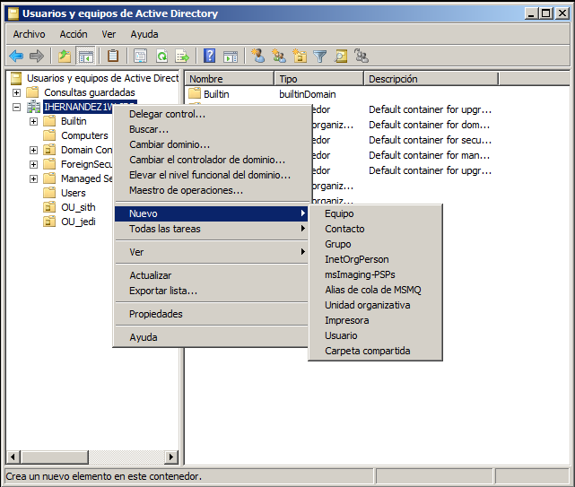
- Luego metemos a los usuarios dentro de la unidad organizativa.
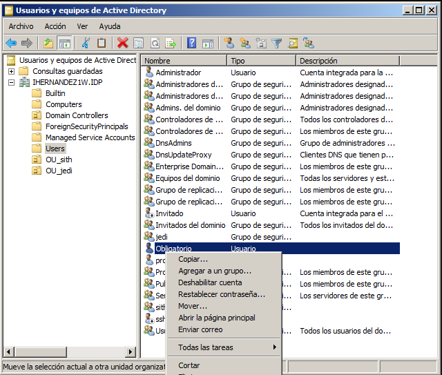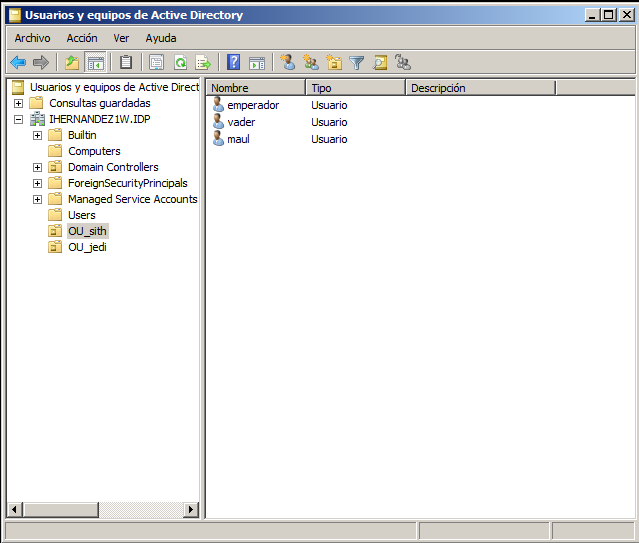
- Para empezar abrimos "Administración de directivas de grupo" en "Herramientas administrativas" y elegimos la opción de
vínculo habilitado en el GPO por defecto "Default Domain Policy" para que las unidades organizativas dentro del servidor
tengan por defecto esas políticas que luego vamos a modificar.
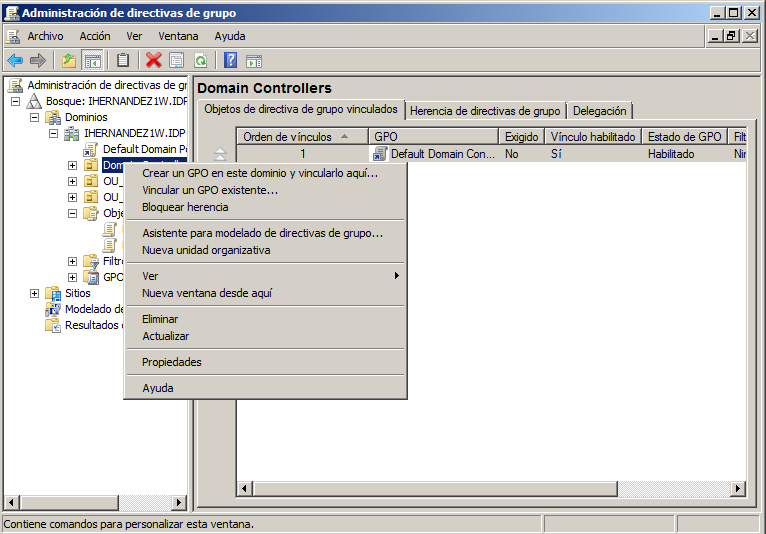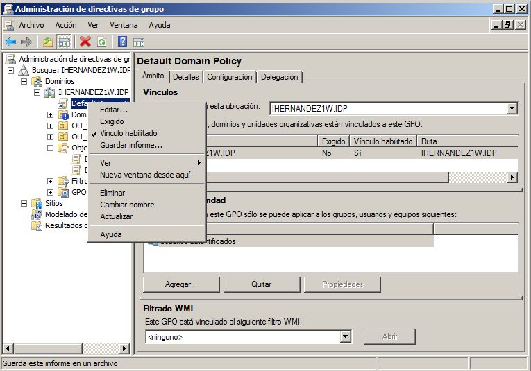
- Luego creamos un GPO para los jedi y lo vinculamos a jedi, usaremos la por defecto en los sith, así tendrán diferentes políticas.
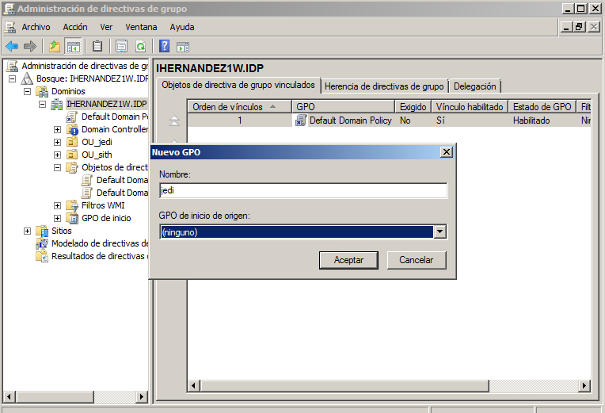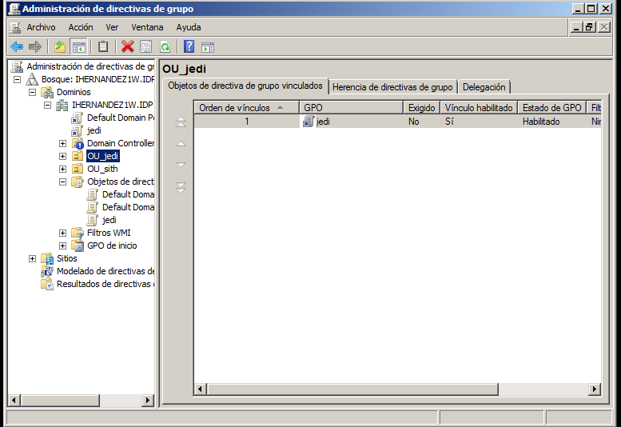
- Lo primero que debemos hacer es elegir el GPO que queremos modificar en este caso el por defecto "Default Domain Policy" y
le damos con el click derecho y elegimos la opción editar para cambiar sus políticas.
- No permitir que se ejecute el Windows Messenger:
Ir a "Configuración de usuario/Directivas/Plantillas administrativas/Componentes de Windows/Windows Messenger/No permitir que se ejecute
Windows Messenger" y habilitarla.
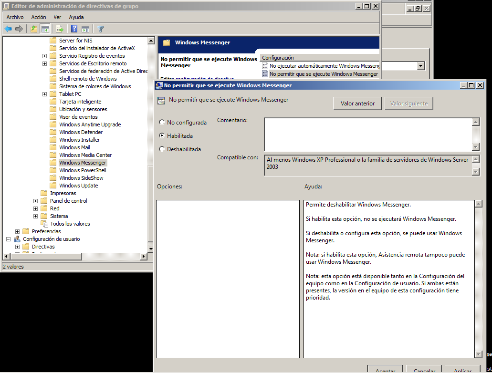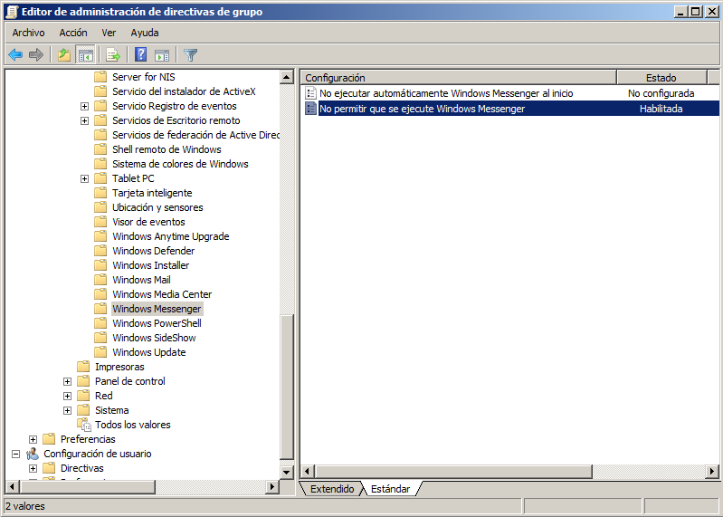
- Quitar el menú ejecutar del menú inicio:
Ir a "Configuración de usuario/Directivas/Plantillas administrativas/Menu de Inicio y barra de tareas/Quitar el menú
Ejecutar del menú Inicio" y habilitarla.
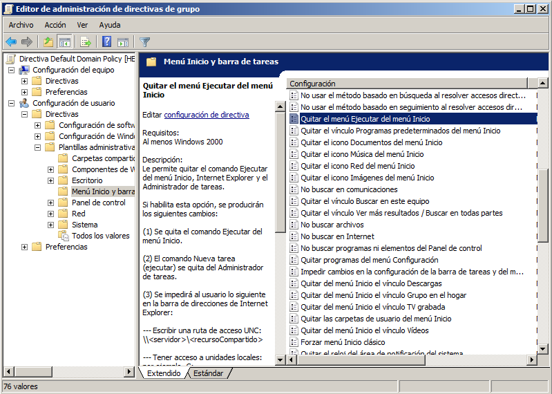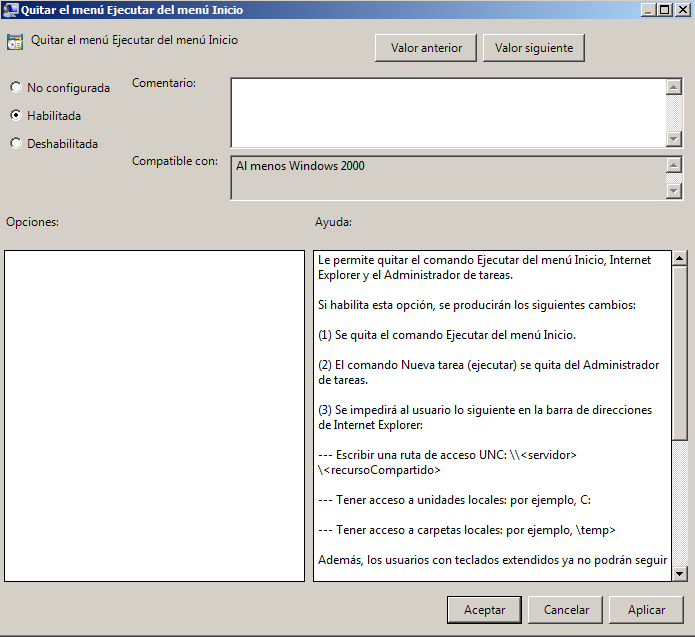
- Prohibir el acceso al Panel de control:
Ir a "Configuración de usuario/Directivas/Plantillas administrativas/Panel de control/Prohibir el acceso al Panel de control" y habilitarla.
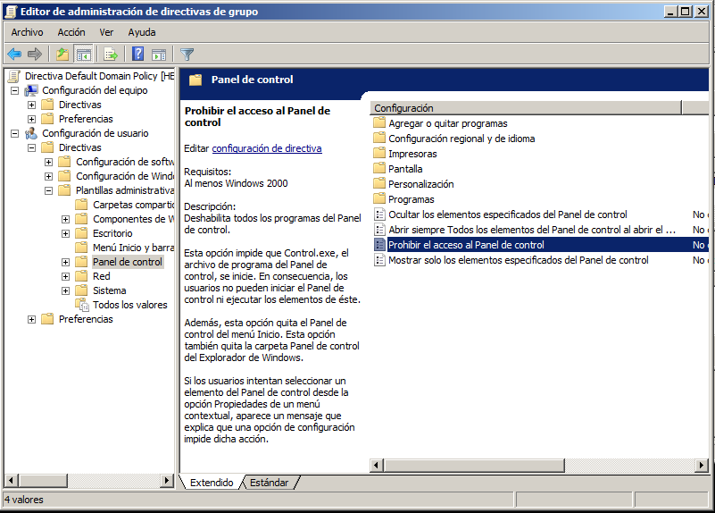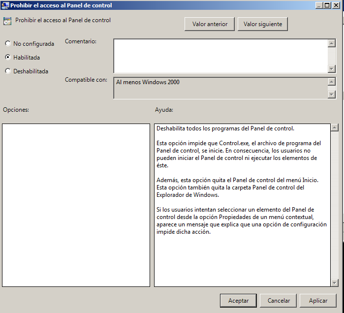
- Ocultar el icono Mis sitios de red del escritorio:
Ir a "Configuración de usuario/Directivas/Plantillas administrativas/Escritorio/Ocultar el icono Ubicaciones de red de escritorio" y habilitarla.
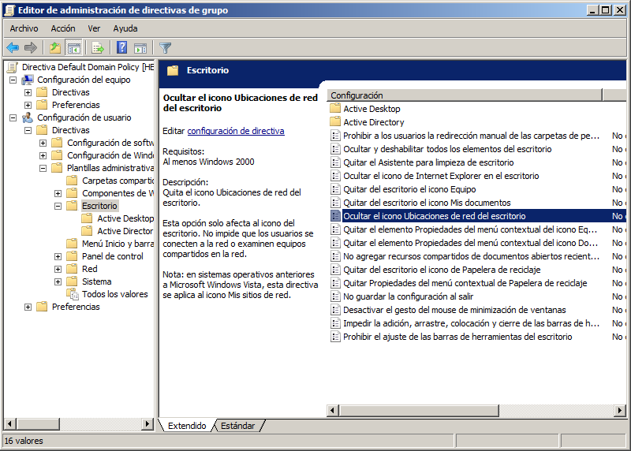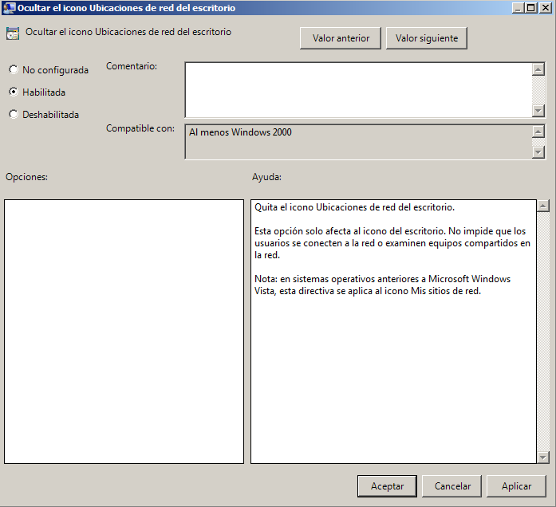
- Quitar el icono Mis sitios de red del menú inicio:
Ir a "Configuración de usuario/Directivas/Plantillas administrativas/Menu de Inicio y barra de tareas/Quitar el icono Red del menú Inicio" y habilitarla.
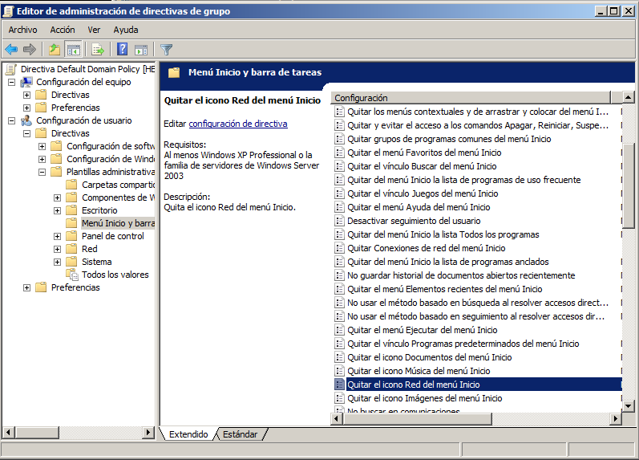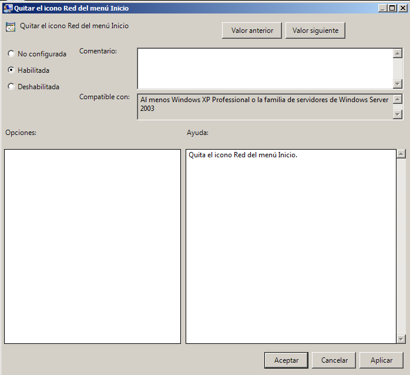
- Quitar Conexiones de red del menú Inicio:
Ir a "Configuración de usuario/Directivas/Plantillas administrativas/Menu de Inicio y barra de tareas/Quitar el icono Ubicaciones de red del menú Inicio" y habilitarla.
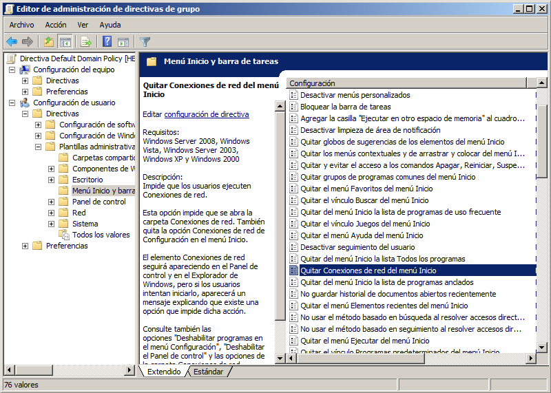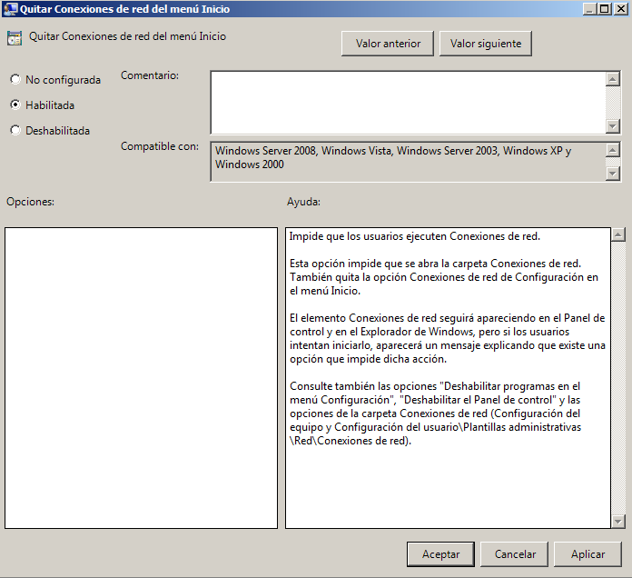
- Ocultar unidades específicas en Mi PC:
Ir a "Configuración de usuario/Directivas/Plantillas administrativas/Componentes de Windows/Explorador de Windows/Ocultar estas
unidades específicas en Mi PC", restringir solo a unidades A y B y habilitarla.
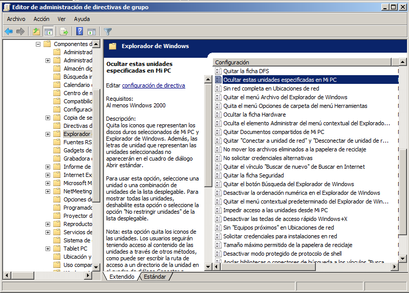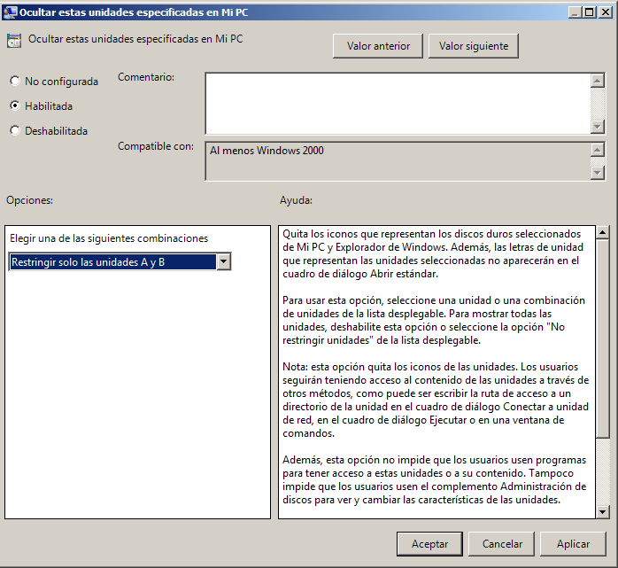
- Habilitar Quitar “Conectar a unidad de red” y “Desconectar de unidad de red”:
Ir a "Configuración de usuario/Directivas/Plantillas administrativas/Componentes de Windows/Explorador de Windows/Quitar
“Conectar a unidad de red” y “Desconectar de unidad de red”" y habilitarla.
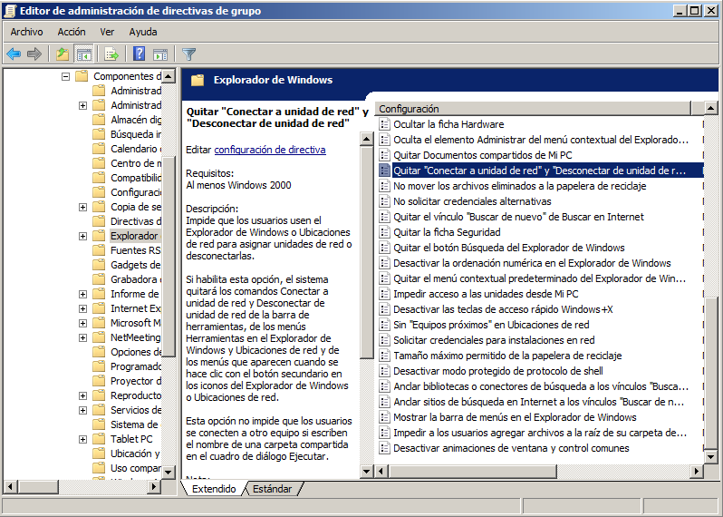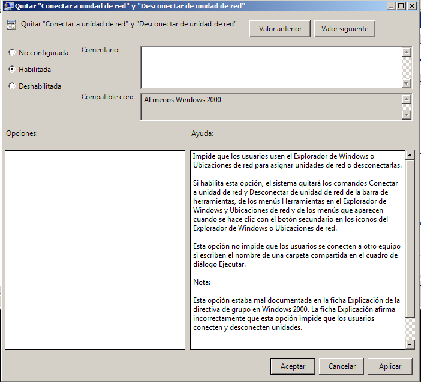